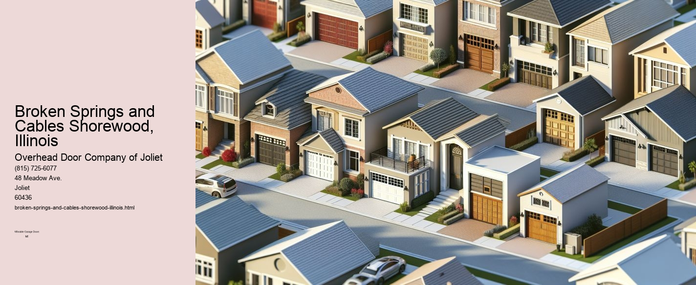

This article needs additional citations for verification. (September 2021) |

Navigating the Challenges of Broken Springs and Cables in Shorewood, Illinois
Nestled in the heart of Will County, Shorewood, Illinois, is a community that thrives on its welcoming atmosphere and picturesque landscapes. However, like any other town, it is not immune to the mundane yet critical issues that affect everyday life, such as garage door maintenance. Among the most common issues homeowners face are broken springs and cables. Understanding these problems is crucial not only for the safety and security of your home but also for maintaining the integrity and functionality of your garage doors.
Garage doors are an essential part of many households in Shorewood, providing both security for vehicles and additional storage space. They often serve as the most frequently used entry point into a home, sometimes even more so than the front door. Given their importance, it is vital that they function smoothly and reliably. Unfortunately, like all mechanical systems, garage doors are subject to wear and tear over time. Two of the most common issues that arise are broken springs and cables.
Garage door springs are fundamental components that bear the weight of the door and allow it to open and close with ease. There are generally two types of springs: torsion springs, which are mounted above the garage door, and extension springs, which are found on either side of the door. Both types of springs are under constant tension and can break due to rust, poor maintenance, or simply old age. When a spring breaks, it can make the door extremely heavy and difficult to open, posing a significant safety hazard.
Cables, on the other hand, work alongside the springs to lift and lower the door. These steel cables can fray and snap over time, especially if there is rust or if they have been improperly aligned.
The challenges posed by broken springs and cables in Shorewood are not unique to the area, but they are certainly exacerbated by the region's weather conditions. The fluctuating temperatures and seasonal changes can accelerate wear and tear. Cold winters can cause metal components to contract and become brittle, while hot summers can lead to expansion and misalignment. These environmental factors make regular maintenance and timely repairs even more crucial for Shorewood residents.
Addressing these issues requires prompt attention and often the expertise of a professional. While some homeowners may be tempted to perform DIY repairs, the risks involved-such as the potential for injury or further damage to the door-often outweigh the benefits. Professional technicians have the tools and experience necessary to safely replace broken springs and cables, ensuring that the door operates smoothly and safely. Moreover, they can provide valuable advice on preventive maintenance to help extend the life of your garage door system.
In conclusion, dealing with broken springs and cables is an unavoidable aspect of homeownership in Shorewood, Illinois. These components are vital to the safe and efficient operation of garage doors, and their failure can cause significant inconvenience and potential hazards. Understanding the importance of regular maintenance and seeking professional help when faced with these issues can save homeowners from costly repairs and ensure the safety of their families. As with any aspect of home maintenance, a proactive approach is always the best strategy.
This article needs additional citations for verification. (September 2021) |